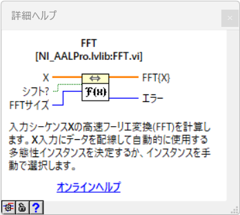
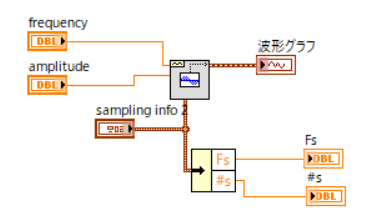
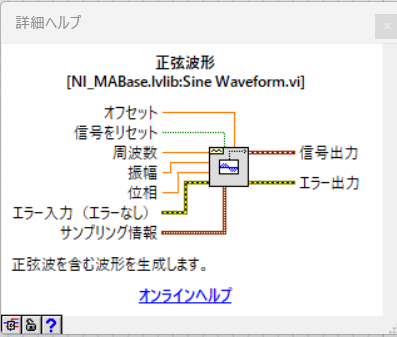
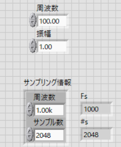
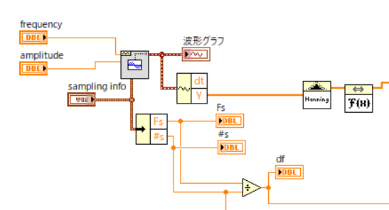
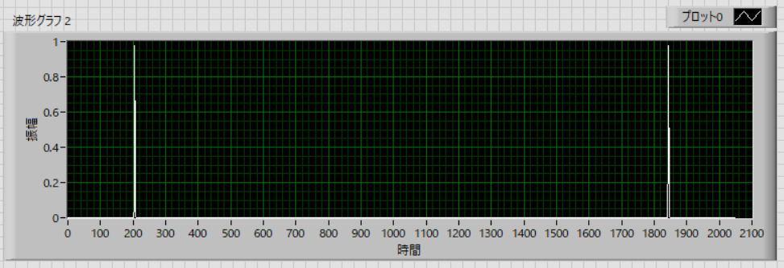
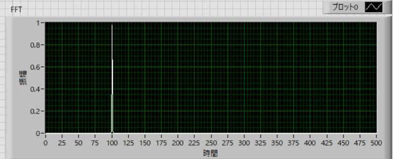
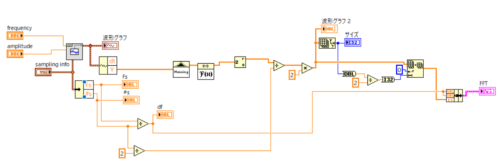

フーリエ変換に関しては，いくつか記事を書きましたが，今までは，パワースペクトル，を主に書いてきました．しかし，
振幅，をきちんと計測したい
ということから，FFT，をきちんと使ってプログラムを書いていきたいと思います．
Labview，には，今まで使ってきたアイコン，パワースペクトル，以外にも，FFT，というアイコンが存在します．

これを使ってフーリエ変換プログラムを作成していきましょう
・波形生成
正弦波をまず生成します．ブロックダイヤグラムでは，


フロントパネルでは，

サンプリング情報では，
周波数 ： 1.00 k
サンプル数 ： 2048
としています．
正弦波の特性は，
周波数 ： 100 Hz
振幅 ： 1.00
としています．
フーリエ変換した際の，周波数の横軸，df，は，こちらにあるように，
\(\Large \displaystyle df = \frac{ frequency}{sample \ number} = \frac{1000}{2048} = 0.488 (Hz) \)
となります．
・FFT
ここから，波形データを取り出し，窓関数（ここではハニング）処理を行った後，FFTを計算します．

ここで，FFTアイコンからの出力は，
2/sample number
で補正しなくてはならないので，sample number/2，で割ります．
具体的な計算は，
元となる波形は，
\(\Large \displaystyle x(t) = A \ cos (2 \pi ft) = \frac{A}{2} \left( e^{j \ 2 \pi ft} + e^{-j \ 2 \pi ft}\right) \)
となりますが，一般的なFFTのアルゴリズムは，以下の総和計算をベースにしています．
\(\Large \displaystyle X[k] = \sum_{n=0}^{N-1} \ x[n] \ e^{-j \ \frac{2 \pi}{N} kn} \)
この式には「データ数 N で割る」という工程が含まれていないため、計算結果の絶対値はデータ数 N に比例して大きくなることになります．
また，元となる波形は，
\(\Large \displaystyle x(t) = A \ cos (2 \pi ft) = \frac{A}{2} \left( e^{j \ 2 \pi ft} + e^{-j \ 2 \pi ft}\right) \)
となるため，もとの振幅Aのエネルギーは正負のピークに半分ずつ分配されます（指数の肩が＋の場合は反時計回り，ーの場合は時計回り）．
つまり，ーの振動を負の振動，と考えると，それぞれに半分づつ分配されることになります．
したがって，N/2，で割る必要があります
また，窓関数は，ここ，に記載してあるように，FFTの場合は，1/2，ですので，2倍します
また，FFTの出力は，複素数ですので，振幅の形に直さなくてはなりません．
複素平面において，距離ｒ，と角度θ，に置き換えます．
\(\Large \displaystyle x + i y = \sqrt{x^2 + y^2} \frac{x + iy}{ \sqrt{x^2 + y^2} } \)
\(\Large \displaystyle = \sqrt{x^2 + y^2} \left( cos \ \theta + i \ sin \ \theta \right) \)
\(\Large \displaystyle = r \cdot e^{ i \theta} \)
Labviewのアイコンには，複素数をこのように変換するものがありますが，”絶対値”，を使っても同じ結果となります．
これらの作業後の結果は，

となります（周波数ではなく，横軸はデータ数）．
左右対称の形をしています．
どちらか半分のみでいいので，（たとえば），左半分のみ抽出して，

と無事，周波数100Hz，振幅１の正弦波のFFTが完成しました．
実際のプログラムは，

となります．
次ページは，窓関数，の効果について検討していきます．